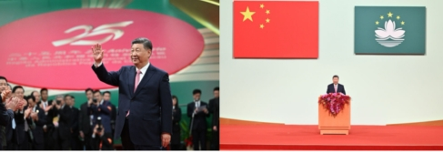
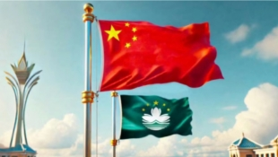
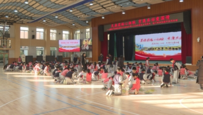
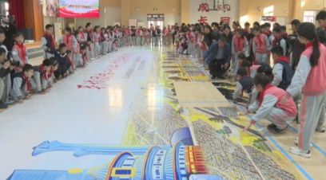

庆祝澳门回归祖国25周年大会暨澳门特别行政区第六届政府就职典礼隆重举行 习近平出席并发表重要讲话
来源：人民日报|相关链接

庆祝澳门回归祖国25周年大会暨澳门特别行政区第六届政府就职典礼20日上午在澳门东亚运动会体育馆隆重举行。中共中央总书记、国家主席、中央军委主席习近平出席并发表重要讲话。他指出，澳门回归祖国25年来，具有澳门特色的“一国两制”实践取得巨大成功，澳门发生翻天覆地的变化，国际影响力大幅提升。他希望，新一届澳门特别行政区政府团结带领社会各界，抢抓机遇、锐意改革、担当作为，更好发挥“一国两制”制度优势，不断开创“一国两制”事业高质量发展新局面。
会场内，气氛庄重热烈。主席台上，中华人民共和国国旗、国徽和澳门特别行政区区旗格外醒目。当习近平和夫人彭丽媛在澳门特别行政区第六任行政长官岑浩辉和夫人黄可萍陪同下步入会场时，全场起立，热烈鼓掌。
上午10时，庆祝大会暨就职典礼开始。全体起立，奏唱中华人民共和国国歌。
习近平走上主席台监誓。岑浩辉首先宣誓就职，他面对中华人民共和国国旗、国徽和澳门特别行政区区旗，举起右手，依照澳门特别行政区基本法的规定庄严宣誓。宣誓完毕，习近平同岑浩辉紧紧握手。
接着，习近平监誓，澳门特别行政区第六届政府主要官员在岑浩辉带领下宣誓就职。宣誓完毕，习近平同他们一一握手致意。
之后，岑浩辉监誓，澳门特别行政区行政会委员宣誓就职。
在热烈的掌声中，习近平发表了重要讲话。他首先代表中央政府和全国各族人民，向全体澳门居民致以诚挚问候；向新就任的澳门特别行政区第六任行政长官岑浩辉先生和第六届政府主要官员、行政会委员，表示热烈祝贺；向长期关心支持“一国两制”事业和澳门繁荣稳定发展的海内外同胞和国际友人，表示衷心感谢。
习近平指出，澳门回归祖国25年来，“一国两制”制度体系不断完善，国家主权、安全、发展利益得到有效维护；经济社会发展实现历史性跃升，居民获得感、幸福感、安全感大幅增强；对外合作持续扩大，“一中心、一平台、一基地”作用日益彰显。
习近平强调，澳门回归祖国以来取得的辉煌成就向世人证明，“一国两制”具有显著制度优势和强大生命力，是保持香港、澳门长期繁荣稳定的好制度，是服务强国建设、民族复兴伟业的好制度，是实现不同社会制度和平共处、合作共赢的好制度，必须长期坚持。“一国两制”蕴含的和平、包容、开放、共享的价值理念，是中国的，也是世界的，值得共同守护。
习近平指出，香港、澳门回归以来的实践经验告诉我们，保持香港、澳门长期繁荣稳定，继续推进“一国两制”实践行稳致远，需要把握好以下4条：一要坚守“一国”之本、善用“两制”之利。始终坚持国家主权、安全、发展利益高于一切，落实中央全面管治权，任何时候都不能动摇。同时，尊重“两制”差异，充分保障特别行政区高度自治权，继续全面准确、坚定不移贯彻“一国两制”、“港人治港”、“澳人治澳”、高度自治的方针，确保不会变、不动摇，确保不走样、不变形。二要维护高水平安全、推动高质量发展。安全是发展的前提，发展是安全的保障，维护安全和推动发展都要坚定不移。要珍惜当前来之不易的安定祥和局面，集中精力拼经济、谋发展、搞建设，不断塑造新动能新优势。三要发挥独特优势、强化内联外通。以更加开放包容的姿态，广泛拓展国际联系，提升全球影响力和吸引力。深度对接国家发展战略，加快融入国家发展大局，在构建新发展格局中更好扮演桥梁角色。四要弘扬核心价值、促进包容和谐。传承爱国爱港、爱国爱澳核心价值，增进多元文化交流融合，凝聚一切积极力量，画出海内外支持“一国两制”事业的最大同心圆。
习近平对新一届澳门特别行政区政府提出4点希望：一是着力推动经济适度多元发展，二是着力提升特别行政区治理效能，三是着力打造更高水平对外开放平台，四是着力维护社会祥和稳定。
习近平表示，青年是澳门的希望和未来，是建设澳门、建设国家的有生力量。希望广大青年心系澳门、心系国家，志存高远、脚踏实地，当好“一国两制”事业的建设者和接班人，让青春在建设强大祖国和美好澳门的广阔天地中绽放光彩。
习近平指出，今年是中华人民共和国成立75周年，中国共产党二十届三中全会对进一步全面深化改革、推进中国式现代化作出系统部署，强国建设已经展开壮美画卷并呈现出无比光明的前景，中华民族正以不可阻挡的步伐迈向伟大复兴。只要全面准确、坚定不移贯彻“一国两制”方针，有特别行政区政府和社会各界共同努力，有伟大祖国作坚强后盾，澳门一定能打开发展新天地、不断创造新辉煌，一定能为以中国式现代化全面推进强国建设、民族复兴伟业作出更大贡献。
岑浩辉在致辞中说，作为澳门特别行政区第六任行政长官，我深感责任重大、使命光荣。我们将秉持“奋发同行、持正革新”的施政理念，勠力同心、守正创新，全面准确、坚定不移贯彻“一国两制”方针，坚定维护宪法和基本法确立的特别行政区宪制秩序，坚决维护国家主权、安全、发展利益，坚定落实“爱国者治澳”原则，不断开创具有澳门特色的“一国两制”实践新局面。相信有伟大祖国作坚强后盾，有全体澳门市民团结奋斗，我们有信心、有能力让澳门这颗国家的“掌上明珠”更加璀璨夺目，为以中国式现代化全面推进中华民族伟大复兴更好发挥作用、作出更大贡献。
蔡奇、李鸿忠、何卫东、何立峰、王小洪、王东峰、夏宝龙等出席。
全国政协副主席何厚铧，香港特别行政区行政长官李家超，澳门特别行政区前任行政长官崔世安、贺一诚，以及澳门各界代表和特邀嘉宾也出席庆祝大会暨就职典礼。
澳门特别行政区政府举行酒会庆祝澳门回归祖国25周年
来源：人民日报|相关链接

据新华社澳门12月20日电 （记者吴昊、周文其）澳门特别行政区政府20日下午举行酒会，隆重庆祝澳门回归祖国25周年。
全国政协副主席何厚铧，澳门特别行政区行政长官岑浩辉，澳门特别行政区前任行政长官崔世安、贺一诚，中央政府驻澳门联络办公室主任郑新聪，外交部驻澳门特派员公署特派员刘显法，中国人民解放军驻澳门部队司令员于长江，以及特别行政区政府主要官员和各界人士约1400人出席在中国与葡语国家商贸合作服务平台综合体举行的酒会。
岑浩辉在致辞中表示，新一届特别行政区政府将带领社会各界认真学习和贯彻落实习近平主席系列重要讲话精神，把习主席的亲切关怀和殷殷嘱托转化为开创具有澳门特色的“一国两制”实践新局面的强大动力。新一届特别行政区政府将以“奋发同行、持正革新”作为施政理念，全面准确、坚定不移贯彻“一国两制”方针，坚决维护国家主权、安全、发展利益，全面坚定落实“爱国者治澳”原则，不断开创“一国两制”事业高质量发展新局面。
共拼一幅图 北京各族青少年庆祝澳门回归祖国25周年
来源：央视新闻|相关链接
 
在澳门回归祖国25周年之际，一幅巨型拼图“走进”了北京多所中小学的校园。据了解，这是由北京市民族宗教事务委员会和共青团北京市委员会主办的“民族团结心相映 京澳共话爱国情”系列活动的一部分，首都各族青少年通过“共创一张画、共拼一幅图”，送出属于自己的祝福。
活动启动前，面向北京青少年公开征集AI绘画作品，希望同学们充分发挥想象力、创造力，借助各类型人工智能AI软件绘制“心中的澳门”。学生们将澳门元素与北京中轴线等传统文化元素相结合，最终绘制出一幅彰显悠久历史与现代科技内涵的巨型长卷。
之后将长卷制作成为长20米、宽4米、共648块的巨型拼图，在北京、澳门两地多所学校内进行传递，同时完成“快拼快闪”活动，共覆盖京澳两地近万名青少年。活动结束后，巨型长卷将被制作成小型拼图作品，作为北京赠与澳门及全国各族青少年代表的礼物。
在快拼快闪活动走入校园的过程中，各学校根据各自教育教学安排，组织学生进行澳门回归文化展、主题班会、主题队课等多种形式的爱国主义教育活动，探索培育新时代青少年家国情怀教育的新模式。